How it works
1. Remove each bookmaker's cut
Every bookmaker's odds are turned into fair chances, taking more of the margin off long shots, where bookmakers put most of it.
2. Blend the bookmakers
The chances are combined into one fair price. Each bookmaker's weight is learned from how well its prices predicted the sharpest closing price (Pinnacle's, and now the Betfair Exchange's) in the previous two seasons.
3. Flag out-of-line prices
Any regular bookmaker offering odds more than 2% better than the fair price is flagged, along with how big the gap is.
Why learn from closing prices and not results? Results are mostly luck, so learning from them needs decades of data and still jumps around. The closing price, set just before kick-off, is the market's final and best-informed view, so it is a much cleaner target. Today the blend is Betfair Exchange 79%, Bet365 9%, Pinnacle 4%, with small weights for the rest.
One practical change: in 2026/27 the data stopped including Pinnacle. The engine now learns from, and is tested against, the Betfair Exchange closing price, where bettors trade with each other and prices are the sharpest left in the data. The exchange now carries most of the weight.
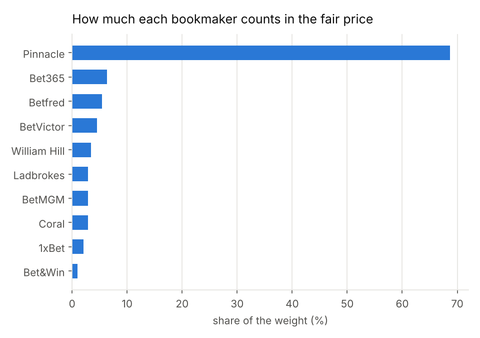
Track record
The test is whether flagged prices were really better than fair. Profit is a poor test because it depends on who won, so it takes thousands of bets to mean anything. The standard test is the closing price: if you regularly get better odds than the market's final price, your prices were genuinely good, whoever won.
Flagged prices beat the closing price by almost exactly the predicted amount
Across 30,976 matches from 2013 to 2027, using weights learned only from earlier seasons, the engine flagged 3,609 prices as more than 2% better than fair. 72% of them beat the closing price. On average they beat it by 4.1% (95% range 3.8% to 4.4%), against the 4.1% the engine predicted. Higher thresholds flag fewer prices with bigger edges, and the prediction holds at every level.
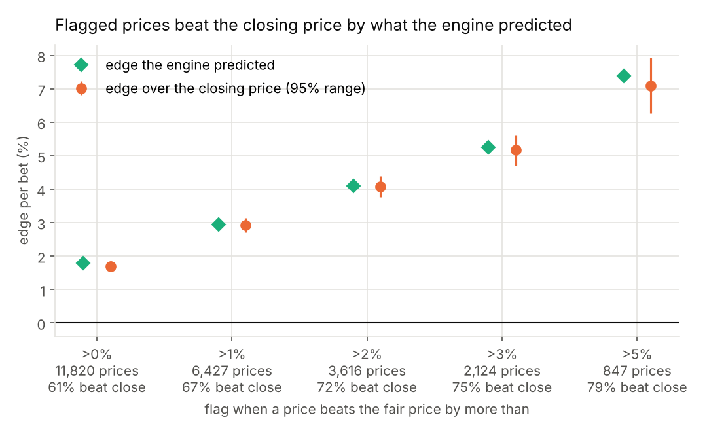
| Flag when the price is | Prices | Predicted edge | Edge vs close | Beat close |
|---|---|---|---|---|
| More than 0% better | 11,969 | +1.8% | +1.7% | 61% |
| More than 1% better | 6,462 | +2.9% | +3.0% | 67% |
| More than 2% better | 3,609 | +4.1% | +4.1% | 72% |
| More than 3% better | 2,122 | +5.3% | +5.2% | 75% |
| More than 5% better | 847 | +7.4% | +7.2% | 79% |
The fair price itself is also closer to the closing price than any single bookmaker, including Pinnacle's own earlier price (1% further away) and Bet365 (14% further).
The edge has shrunk. Up to 2018/19 the engine flagged about 472 prices a season. Since then, as bookmakers have copied the sharpest prices faster, it has flagged about 97 a season. Those that remain still beat the closing price by 3.6% on average. Single seasons are noisy with so few flags (the weakest, 2023/24, was 2.1%), but the edge has held up in every one. On today's prices this is a tool for spotting the occasional mistake, not a steady stream of them.
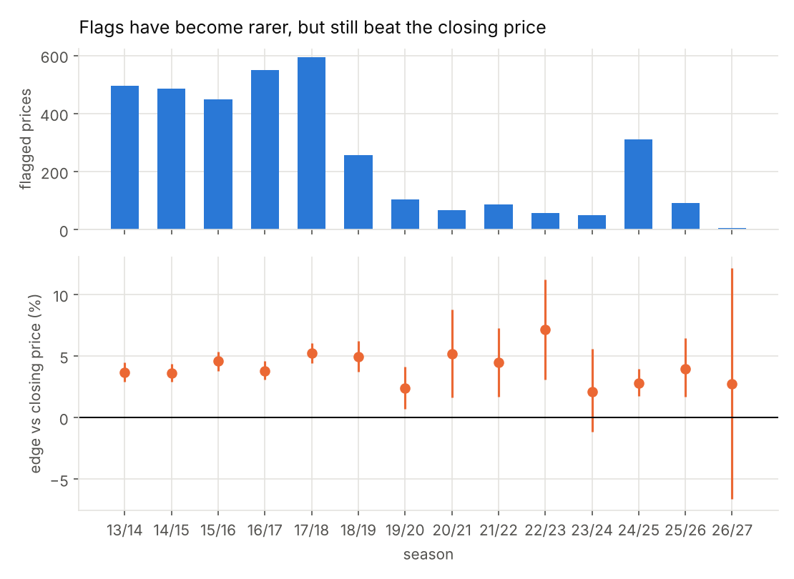
The profit on the 2% flags was +7.2% per bet, but the 95% range (+1.5% to +12.8%) is wide, which is exactly why the closing price is the better test. Flags have also become rarer as bookmakers' prices have tightened, and in practice bookmakers limit customers who consistently beat their prices.
What 27 seasons of odds show
Before building the engine, I studied how accurate the odds are, using 52,841 matches from the Bundesliga, English Premier League, English Championship, Ligue 1, Serie A and La Liga between 2000 and 2027. These findings explain why the engine is designed the way it is.
The odds are accurate
I grouped every outcome by the chance the odds gave it, then checked how often it happened. Outcomes given a 67% chance happened 70% of the time. Outcomes given a 12% chance happened 10% of the time. Perfect predictions would sit on the diagonal line, and these are close. They're slightly too steep: favourites win a little more often than the odds say, and long shots a little less.
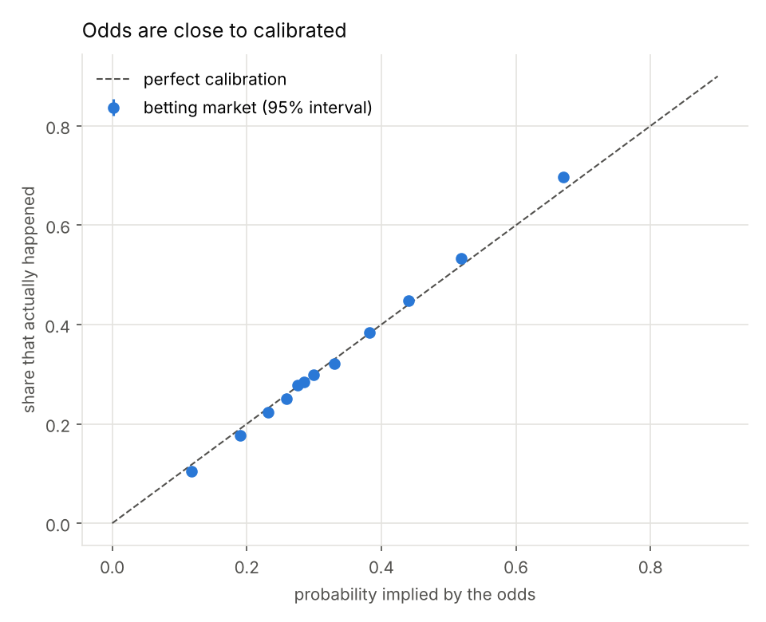
Long shots are a bad bet
Betting £1 on every heavy favourite (odds below 1.5) at the average bookmaker's price lost 1p per bet. Betting £1 on every long shot (odds of 10 or more) lost 27p. This is the favourite–long-shot bias, which also shows up in horse racing and other betting markets.
It comes from how bookmakers spread their margin: they put more of it on long shots. Removing the margin that way makes the odds almost perfectly accurate (a slope of 1.01 instead of 1.09).
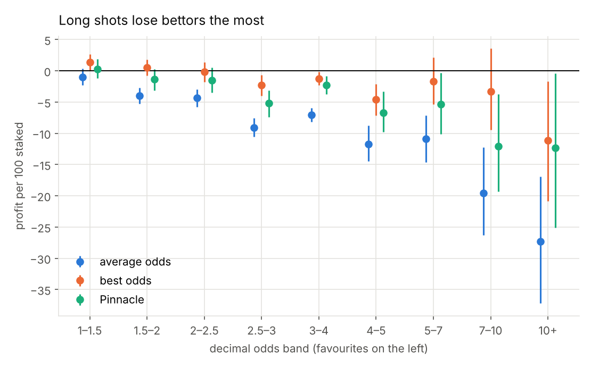
Taking the best price from about ten bookmakers gets favourites to roughly break even. In practice that needs an account with every bookmaker, and the very best price is sometimes a mistake that gets cancelled.
Bookmakers take a smaller cut than they used to
The average bookmaker's margin fell from 13.0% in 2000 to 6.5% by 2027. Pinnacle, which aims for high volume at low margins, takes about 2.5%.
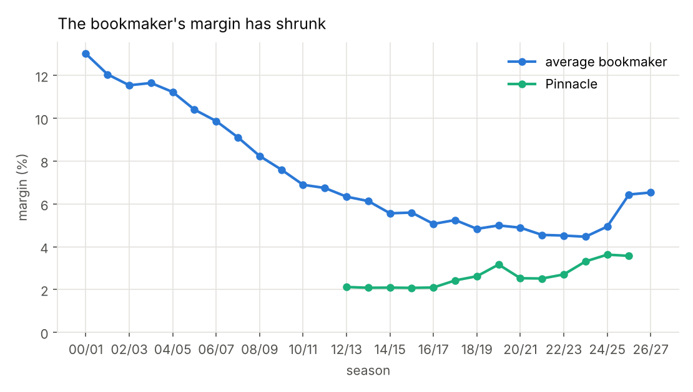
Prices that move before kick-off move the right way
Pinnacle records an opening price and a closing price just before kick-off. Across 31,790 matches from 2012 to 2026, the closing price was the better prediction. When an outcome's chance rose by 3 percentage points or more before kick-off, a bet at the opening price made +11.3% per bet (95% range +8.1% to +14.5%). When its chance fell by 3 points, the same bet lost 15.1%.
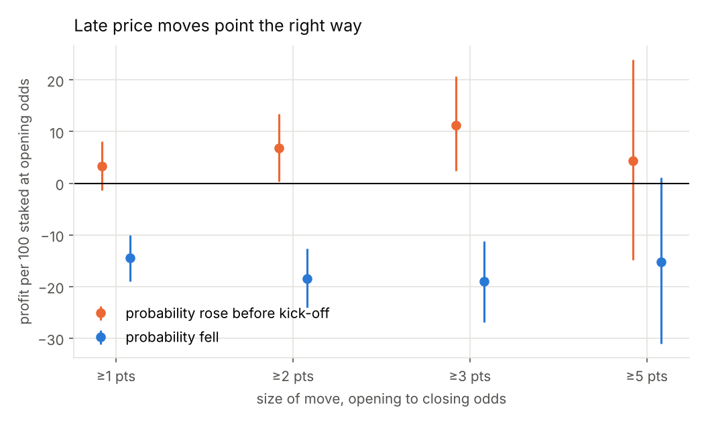
This isn't a strategy, because you can't know the move in advance. What it shows is that real information, such as team news and injuries, arrives before kick-off and the opening price hasn't caught up. I tried several cut-offs, not just 3 points, and they all point the same way.
A model built from past results can't beat the odds
The model rates each team's attack and defence from its recent goals, a standard approach from Dixon and Coles (1997). Every week it is refitted using only matches already played, so it never sees the future. Its one setting, how quickly old results fade, was chosen using seasons before 2008 and then left alone.
| Prediction (38,261 matches from 2010) | Log loss | RPS |
|---|---|---|
| Equal chances (⅓ each) | 1.0986 | 0.2351 |
| My model | 1.0159 | 0.2070 |
| The odds | 0.9863 | 0.2001 |
| The odds, recalibrated | 0.9859 | 0.2000 |
| The odds and my model combined | 0.9859 | 0.2000 |
Lower scores are better. The model is much better than guessing, but clearly worse than the odds, and adding it to the odds didn't help at all.
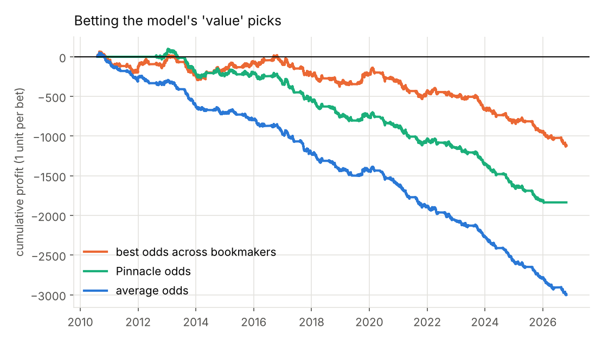
Betting on every outcome the model rated at least 5% more likely than the odds did lost 11p per £1 at average prices and 6p at Pinnacle. Even at the best available price, it only broke even.
Pinnacle's prices hint at bargains elsewhere, but the evidence is weak
Once the margin is removed, Pinnacle and the average bookmaker are equally accurate. But bookmakers don't all update their prices at the same moment, so sometimes one offers better odds than Pinnacle's prices say are fair.
Betting only on those made +1.5% per bet over 16,060 bets (95% range -0.8% to +3.9%). When the gap was at least 2%, it made +2.5% (-2.0% to +7.2%).
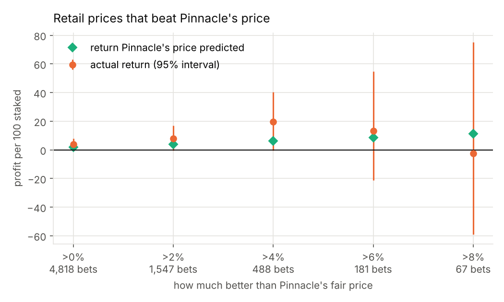
Every result is positive and roughly matches what Pinnacle's prices predicted. But the range always includes zero, most of the profit came in 2012–2014, and bookmakers restrict customers who bet this way.
Margins fell, but the long-shot bias didn't
Season by season, there's no sign the odds have become more accurate. Long shots were the worse bet in 25 of 27 seasons. Cheaper betting didn't mean better prices.
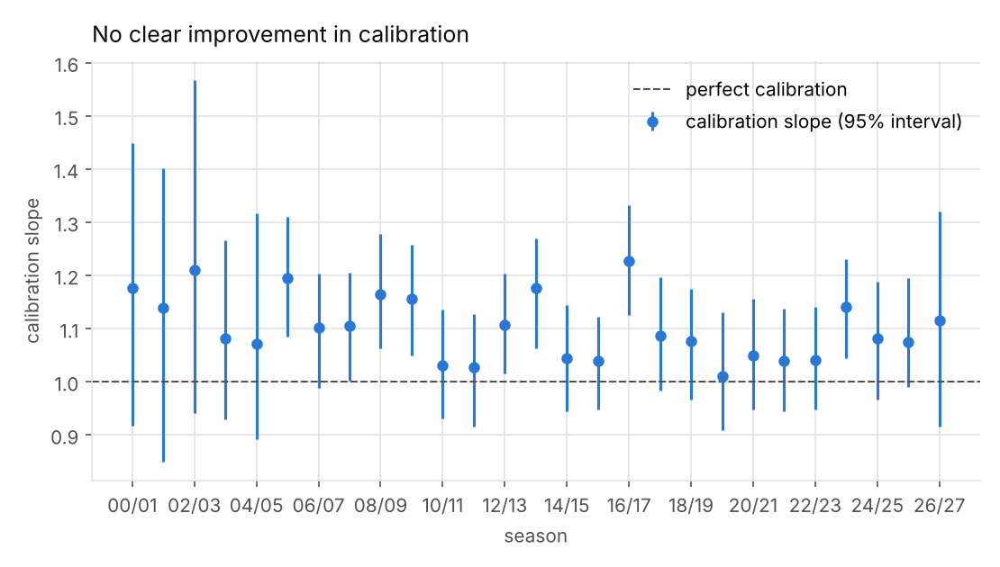
The second division isn't easier to beat
Fewer people follow the Championship and less money is bet on it, so it could be priced less accurately than the Premier League. It isn't. Its odds are just as accurate, and my model didn't help in either league.
| League | Matches | Margin | Calibration slope | Loss betting on everything |
|---|---|---|---|---|
| Premier League | 9,806 | 5.7% | 1.09 | 8p per £1 |
| Championship | 12,680 | 6.4% | 1.06 | 7p per £1 |
After half-time, the team that's behind scores more than expected
The data includes half-time scores, so I tested the simplest way to price a match at half-time. Work out each team's expected goals from the pre-match odds, assume they keep scoring at that rate in the second half, and add the result to the half-time score.
That assumption is wrong. Teams losing by two or more goals scored 15% more in the second half than expected. Teams winning by two or more scored 5% fewer. Teams that are behind push forward, and teams that are ahead sit back.
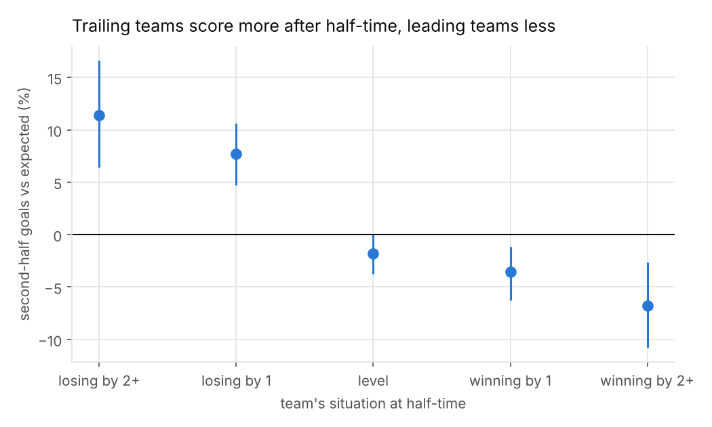
Is it really the scoreline? Maybe games with early goals are just more open, and both teams score more. To rule that out, I compared the two teams in the same match. That cancels out anything that affects both sides, like an open game, the weather or the referee. The team that was behind was expected to score 43.7% of the second-half goals. It actually scored 47.0%.
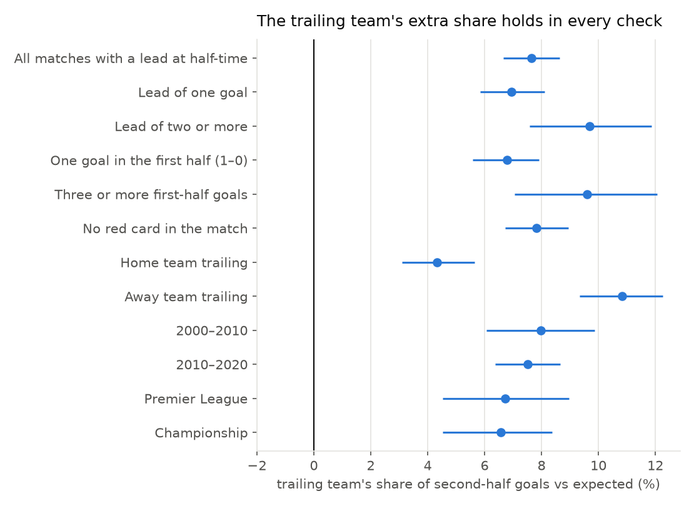
The pattern holds in all 12 checks: with or without red cards, in both decades, in both leagues, and after quiet or busy first halves. It's stronger when the lead is bigger, and stronger when the away team is the one chasing the game. If anything, the test is stacked against the finding. A team losing at half-time is probably weaker than its odds suggested, so you'd expect it to score less, not more.
This means the simple model overrates the team in front. A slight favourite leading 1–0 at half-time was given a 76% chance of winning, and won 72% of the time over 10,249 matches. Games level at half-time ended in a draw 40% of the time, not the 38% predicted. Adjusting for the scoreline, using only seasons before 2010, made the half-time predictions measurably better for the 38,256 matches after that.
The data doesn't include live odds, so this shows where a simple live price goes wrong, not whether bookmakers make the same mistake.
What I learned
Test against the closing price
Results are mostly luck. Learning from and testing against the closing price makes the engine steady and its accuracy measurable.
Never let the model see the future
The model only uses matches already played, its setting was chosen on separate early seasons, and a test checks both. Without that, a backtest can look profitable by accident.
Always show the uncertainty
Betting returns are noisy. Every number here comes with a 95% range, and several strategies that looked promising turned out to be noise.
How it's built
- Data: results and odds from up to ten bookmakers per match, from football-data.co.uk.
- Removing the margin: three methods compared (proportional, power and Shin's 1993 model).
- Fair price: a weighted logarithmic pool of bookmakers, with weights fitted to closing prices each season (SciPy).
- Model: team ratings refitted every week on past matches only, in scikit-learn.
- Combining forecasts: logistic regression, refitted each season on earlier seasons only.
- Uncertainty: 95% ranges from resampling whole matches (the bootstrap).
- Tests: fourteen automated checks, including one that the model never sees a match before predicting it.
Limits
- The track record needs closing prices, which the included files have from 2015. Running
step2_download_more_data.pyextends it to the current season and four more leagues. - The odds are snapshots collected by football-data.co.uk, not every price on offer.
- This is a study of forecasting, not betting advice. Mostly, it shows how hard the market is to beat.